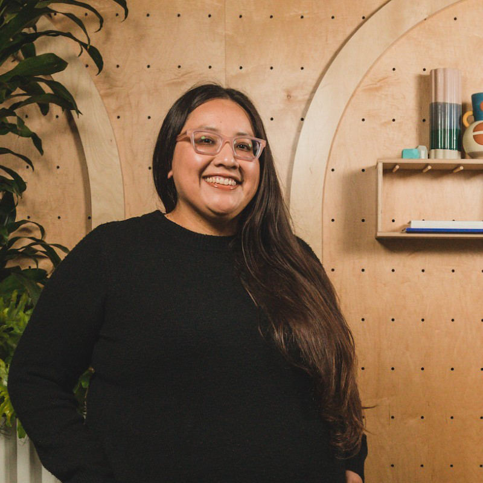

Finding My Calling
As I navigated life after Stanford, Go Cardinals!, my career journey took me to unexpected places. I stepped into the role of AmeriCorps VISTA Member, helped create dignified jobs for low-income women at WAGES, managed my dad's business, and soon started to dabble in the world of human resources.
Not knowing that human resources would be my calling, I started working in HR while at TriNet. The role of Client Success Consultant seemed like a good place to rest and find myself while I looked for a career path better suited for me. I had been eyeing the world of non-profits and possibly self employment, maybe even another degree? As I stepped deeper into my role of Client Success Consultant, I realized I really enjoyed informing people, reading up on the latest policy changes at work, and just helping others understand rules and regulations at work.
People Operations Specialist
Ten years later, I am a proud member of the HR team at Pinterest! Umm, wasn't HR supposed to be a temporary career path?!
My day to day at Pinterest requires a few things. Coffee being my top priority PinCafe!)... followed by perfectly crafted emails, smooth onboarding for new employees and a few friendly calls with my fellow Pinployees! As busy as the day gets, I make sure to carve time out and check in with my co-workers. With Pinflex, most of us work from home and venture into the office here and there. This only makes it more important to check-in with each other, our mental health is top priority!
As I strive to create remarkable employee experiences through our onboarding process, I ensure that I am cultivating strong relationships with other Pinployees so that I create a safe space for those that are current and new employees. Human resources can be a complicated field, I strive to make it a little easier to understand and friendlier for those that are seeking assistance.
Let's Connect!
Check out my LinkedIn!
I look forward to connecting and learning about you!
Umm, don't I look adorable!